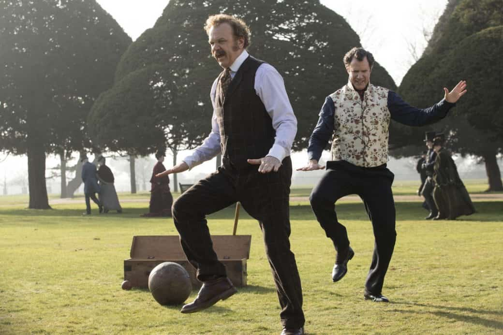

24 января в российский прокат вышла сатирическая комедия «Холмс & Ватсон» режиссера и сценариста Этана Коэна с Уиллом Ферреллом и Джоном Си Райли в главных ролях. В США она вышла под Рождество, и западные критики уже успели окрестить картину «худшим фильмом о Шерлоке» и «одной из худших 2018». И да, тут все действительно очень плохо. Но не настолько, чтобы на этом стоило зацикливать внимание.
У фильма было 0% на Rotten Tomatoes, 24 из 100 на Metacritic, 6 номинаций на «Золотую малину», десятки разгромных рецензий кинокритиков, сотни гневных отзывов зрителей и ни одного человека на сеансе в волгоградском кинотеатре, кроме меня.
В общем, было сложно, но я посмотрел. И оказался разочарован: фильм не настолько плох, как о нем говорили. Он просто скучный и глупый — без каких-либо эмоциональных оттенков, так как не способен задеть ни единый нерв или извилину.
Шерлок Холмс (Уилл Феррелл) и Джон Ватсон (Джон Си Райли) берутся за очередное дело, подкинутое Мориарти (Рэйф Файнс), который собирается убить королеву Великобритании. Пока миссис Хадсон (Келли Макдоналд) устраивает оргии в соседней комнате (она тут молодая), детектив и доктор едят сырые луковицы, отстреливаются от роя пчел из аквариума и занюхивают флакончик кокаина, параллельно пытаясь решить сложную головоломку.
А помогают им с этим старые добрые Лестрейд (Стив Куган) с Майкрофтом (Хью Лори), на пару с прибывшей из Америки доктором (Ребекка Холл) и ее помощницей-экспериментом — девушкой (Лорен Лапкус), которая после шоковой терапии ведет себя как кошка. Логика на тим-ап, увы, опоздала — но герои спокойно обходятся и без нее. Трудно здесь приходится исключительно зрителю.
Проблем у «Холмса & Ватсона» много, но все они упираются в один момент — фильм банально не имеет представления для чего, кого и зачем он вообще был снят. Лента кишит противоречиями, сырыми набросками, которые не смогли дописать до конца и в итоге просто скомпоновали воедино, с мыслью: «да и так сойдет!».
У нас есть плоские вторично-детские шутки — а в следующем же кадре мы говорим про оргии и онанизм. У нас есть каст первоклассных актеров (Рэйф Файнс, Хью Лори) — но снимаем мы дешевую трэш-комедию. У нас вроде как викторианский Лондон — но на фоне играет современная поп-музыка, а главные герои делают селфи с королевой при помощи стационарной камеры. Не забыли впихнуть и красную шапку с надписью MAKE ENGLAND GREAT AGAIN — куда же без подкола Трампа в современной сатире.
А еще есть совершенно спонтанный двухминутный музыкальный номер. И сцена сексуальной прелюдии на обмазанном излишками торта трупе. Не спрашивайте.

Даже трэш-фильмы нужно уметь снимать и по-своему грамотно продумывать. Мало вылить на зрителя ведро конкретной дичи, а потом оправдываться: «Ну у нас же тут абсурд, настоящая вакханалия!». Даже у тотального хаоса на экране должна быть определенная идея — вспомните, например, «Солдатов неудачи» (Tropic Thunder, 2008), сценарий к которому написал все тот же Этан Коэн. Фарс фарсом, но сюжет практически не вызывает вопросов, так как сплетен какой-никакой логикой, и тем и смешит.
А компиляция бессвязных скетчей будет вызывать разве что скуку, и только у особо чувствительных — недоумение. При просмотре «Холмса & Ватсона» слезы если и льются, то не от смеха или горести, а исключительно от боли в вывихнутой при зевке челюсти.